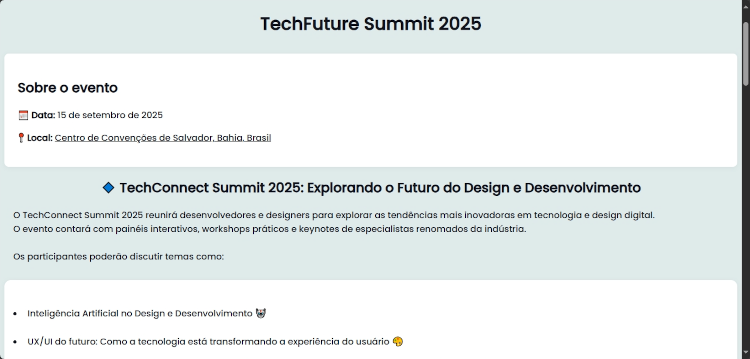

PROJETO TECHSUMMIT.
O projeto TechSummit é um website um pouco mais elaborado do que o do TechConnect. Desta vez, também a pedido do tutor do meu curso, utilizamos o HTML juntamente com o CSS para desenvolver o mesmo. A ideia era desenvolver um site que anunciava um evento tecnológico fictício na cidade de Salvador e ter um formulário com uma API para receber as informações do forms. Confira todas as nuâncias desse projeto acessando o repositório dele no GitHub.
